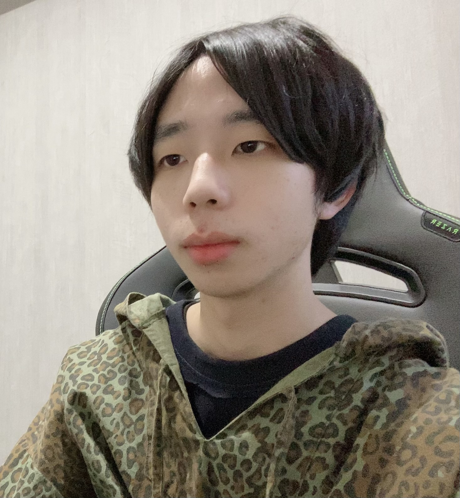

E
M
O
C
L
E
W
Profile

木上 祐樹
地元広島の大学を卒業後、株式会社ユナイテッドアローズに新卒で入社し、4年ほどアパレルの販売員として勤め、お客様満足を追求してきました。販売員という枠から、次は自身で作り上げ、お客様に喜んで頂きたいという思いから、興味のあったWEBデザイナーの道を選びました。現在はWEBデザイナーになるという目標のため、IllustratorやPhotoshop,HTML,CSSなどのスキルを身に付け、現在も日々勉強をしています。
Portfolio
- Theme:コーヒーカフェ
- Target:20~40代
- point:友人や家族との時間をより素敵なものにできる優雅な空間を過ごせることをメッセージにした、サイトのファーストビューをイメージ。それに合わせて、画像も誰かと過ごすシーンがイメージできるものを使用し、アート調の加工にすることで非日常感も演出しました。
- Theme:ファッションブランドサイト
- Target:20代 ファッション感度高め
- point:2021年のspring/summerコレクションからスタートしたブランド。このような設定から、ウェブサイトをイメージしました。インパクトのある洋服を際立たせるために周りのデザインはシンプルにしたファーストビューにしました。ブランドテーマカラーをオレンジとし、サイトにもそのカラーを取り入れました。
- Theme:フラワーアレンジメント
- Target:30~40代 主婦
- point:フラワーアレンジメント教室のサイトをイメージ。メッセージには、自己表現と花のある生活という２つのキーワードを取り入れ、教室での体験を表現。画像は実際に制作しているシーンのものを使い、教室での様子を想像していただけるようにしました。
- Theme:映像出力製品
- Target:20~30代
- point:次世代の鮮明な映像を可能にした製品のアピールをイメージ。鮮明さのある画像を使用し、美しい映像体験ができることを主張したファーストビューにしました。ファーストビューの画面から映像体験に移れるようにしました。
- Theme:広島最先端情報サイト
- Target:広島県民、観光客
- point:広島の最先端を届けるサイトをイメージ。例えば、ニューオープンのお店も規模を問わず、掲載し、広島での活動を盛り上げていくことをするという設定にしました。実際に、実体験として特にフード関連は商業施設で開催している限定店舗などもっと情報がまとまっていたらと思うことがあるため、そう言ったことから連想しました。
- Theme:美容院
- Target:20~40代
- point:美容院のサイトをイメージ。ナチュラルな雰囲気にしながらも、差し色や大きめのメッセージ、背景を斜めに入れ込んでみたりなどを取り入れ、清潔感を残しながらもシンプルすぎないようにしました。

こちらは実際にオンラインサイトを作成したものになります。
家具のオンラインサイトを想定しTOPページから商品リンクまでをコーディングしました。
サイトはこちらから